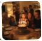
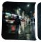
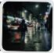

10:02
burrow.
you can free up
2.4 GB
214 extra shots of the same moments · 61 blurry or accidental · 4,812 photos checked on this phone





today's pick
keep — everyone's eyes open
let go
last checked 2 hours ago · camera · last 90 days ·